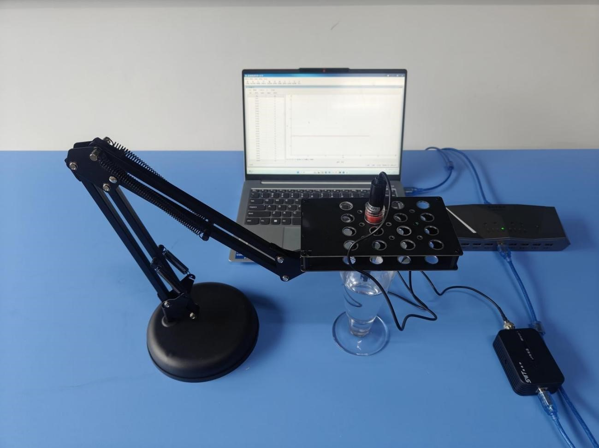
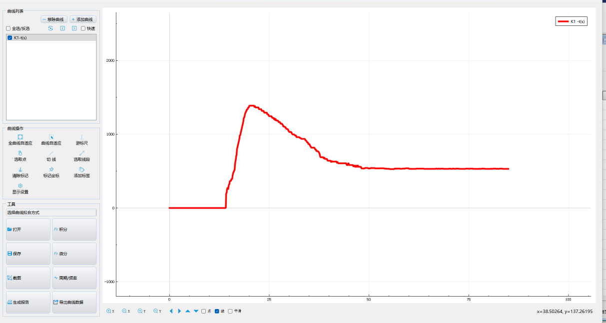

实验五十一 探究溶液中离子反应的实质及发生条件
【实验目的】
冰醋酸稀释过程中溶液电导率的变化。
【实验原理】
在蜡酸（CH3COOH）溶液中，存在以下电离平衡： CH3COOH CH3COO- + H+,CH3COOH溶液的导电性能是由离子浓度决定的。溶液加水稀释时，平衡向正反应方向移动，使溶液中离子浓度增大，而同时由于加水使溶液的体积变大又使溶液中离子浓度减小。溶液导电能力的强弱，由这两个方面的因素共同决定，看哪一个因素占主导地位。
【实验器材】
数据采集器、电导率传感器、计算机、稀释池、冰醋酸、蒸馏水、多功能支架等。
【实验装置图】

【实验操作步骤】
1.搭建好实验环境，打开实验数据分析软件，连接好数据采集器和电导率传感器；
2.取5ml冰醋酸于稀释池中；
3.用蒸馏水冲洗电导率传感器探头，并用滤纸吸干附在探头上的水，将电导率传感器探头插入冰醋酸中，探头前端应浸没在溶液中；
4.打开“表格视图”，点击“采集”，然后往小烧杯中持续缓慢的加入蒸馏水，待传感器读数趋于稳定时，停止加蒸馏水，然后点击“暂停”停止采集，点击“数据分析”，做出电导率随时间变化的曲线。

电导率变化曲线
【注意事项】
1.电导率传感器需小心轻放；
2.传感器顶部插入待测样品溶液中时应注意确认探头已完全浸没在液体中；
3.实验结束后，用蒸馏水冲洗电极，并用纸巾或实验室用布进行干燥处理后即可存放。干燥时应注意避免擦坏传感器电极的内部表面。
【思考与讨论】
1.观察实验中得到的图像，总结冰醋酸稀释过程中溶液电导率变化的规律；
2.从图中我们可以看到，冰醋酸稀释过程中溶液的电导率先增大后减小，为什么会这样呢？你能用你掌握的知识对这一现象做出合理的解释吗？
【自由探究】
将实验中的冰醋酸换成盐酸，重做实验，比较盐酸和冰醋酸稀释过程中溶液电导率变化的差异并分析产生差异的原因